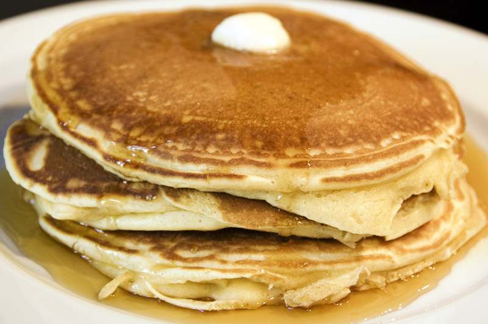

Good Old-Fashioned Pancakes

Description
This pancakes recipe produces thick, fluffy, and all-around delicious pancakes with just a few ingredients that are probably already in your kitchen.
Ingredients
- 1 ½ cups all-purpose flour
- 3 ½ teaspoons baking powder
- 1 tablespoon white sugar
- ¼ teaspoon salt, or more to taste
- 1 ¼ cups milk
- 3 tablespoons butter, melted
- 1 large egg
Steps
- Gather all ingredients.
- Sift flour, baking powder, sugar, and salt together in a large bowl. Make a well in the center and add milk, melted butter, and egg; mix until smooth.
- Sift flour, baking powder, sugar, and salt together in a large bowl. Make a well in the center and add milk, melted butter, and egg; mix until smooth.
- Flip and cook until browned on the other side. Repeat with remaining batter.